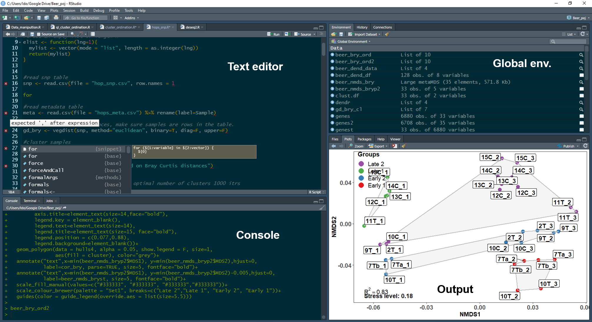
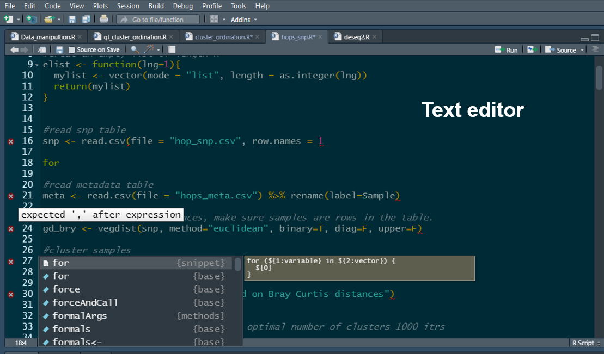

2 Lab 1: Introduction to the R Programming Language and the RStudio IDE
2.1 Learning objectives
Click to expand
By the end of this lab you will be able to:
Install the R interpreter and the RStudio integrated development environment
Demonstrate the ability to install and load packages from a variety of repositories, including development versions from GitHub
Understand the different components of the RStudio environment
Demonstrate mastery of R object and data types including indexing, subsetting, and manipulating objects
Demonstrate the ability to call and chain functions
3 Getting started
3.1 What is R?
R is a free and open-source programming language, operating as a GNU project. The R language is maintained and supported by the R Foundation for Statistical Computing.
“R is a functional programming language and environment for statistical computing and graphics”
— The R dev team
R is best known as a programming language with strong capabilities for manipulation, exploration, and statistical analysis of data from diverse types and sources. However, it also provides an environment for data handling, graphical representation of data, as well as data reporting. R is a great platform for documentation—in fact, this entire lab manual was written in R using the rmarkdown package.
Why use R?
- Open source and free
- Available on all major platforms
- Large community of users and developers (over 2M users in academia, government, and industry)
- Thousands of open-source packages aimed at the analysis of biological data in general and genomic and evolutionary data in particular
- Customizable and allows for the construction of pipelines
- Reproducible analysis
3.2 Downloading and installing R and RStudio desktop
To download R, go to the R download page, select the SFU mirror, then select your operating system and download and install both 32 and 64 bit versions.
To download RStudio desktop, go to the RStudio download page and download the free RStudio desktop version.
Note
Note that you must download and install both R and RStudio in order to work with R in the RStudio IDE. Note that it is important that you have the most up-to-date version of R. Even if R is already installed on your computer, make sure to update it. If using Windows, you can use the installr package to update R.
3.3 The R interpreter
Generally speaking, R is an interpreted language, and its human-readable code cannot be directly converted to machine code by the operating system. Therefore, it needs an interpreter to translate the human-readable code to a format understood by the operating system and the processing unit as the code runs.
The R console is an R interpreter with a very simple GUI. It allows you to write and run your code line by line just like you would in a terminal.
Console input and output:
1+1[1] 23*3[1] 94/2[1] 24^2[1] 16print("Hello world")[1] "Hello world"In the example code above, the white text represents input commands, while the gray output shows the results returned by the interpreter. Furthermore, the print function was called to display the famous “Hello world” greeting that no coding workshop is complete without.
Short console exercise
Now let’s get you to work. The following lines of code will assign values to the variables “j”, “k”, and “rowling” (we will discuss variable assignment in R later in this lab). Open the R console on your computer and run them.
j <- "Harry"
k <- "Potter"
rowling <- data.frame(First_name = j, Last_name = k)Notice that no output was generated, since you only assigned values to some variables. You can get the interpreter to output the value of each variable by calling them in the console. Try it for each of them. As you can see, the variables are stored in memory. This is evident by the output generated when you called the variables in the console. Furthermore, without knowing much R, you probably already guessed that not all variables are created equal and that there are some differences between rowling and the rest of the variables. However, the console doesn’t allow you to immediately see how many variables are stored in memory, nor does it allow you to see their names, memory allocation, type, etc. In order to see those using just the console, you would have to call an array of functions. For example, try running the following function in your console.
ls()If you are familiar with UNIX-based operating systems, you probably recognized that ls is short for list. When running the ls() function in the console, the output will list all stored variables. But as you may notice, this is about all it does. You can also imagine that this is not the most efficient way to keep track of the variables you declare when working with more than a couple of variables (which is sometimes required). In order to keep things streamlined and organized, it is advisable to work with an Integrated Development Environment (IDE), which allows you to have better control of code editing, variable storage, console output, etc. R has several IDEs; however, the most popular by far is RStudio.
3.4 The RStudio IDE
As mentioned above, RStudio is an integrated development environment (IDE) for R. It is highly customizable, but its default setting includes four panes: a text editor pane, a console pane, a global environment pane, and an output pane.

Unlike the basic console GUI, RStudio allows you to manage and separate different R projects (e.g., you could have a separate project for this course and one for a stats course). Another advantage of RStudio is its integration of version control, which includes both Git and SVN. This will be beneficial in future courses when you will be required to collaborate on projects.
The text editor pane
The text editor pane is found in the top left corner of the RStudio screen. The text editor allows you to edit code before sending it to the console. As shown in the figure below, there are some advantages to writing your code with the RStudio code editor. It auto-completes syntax, functions, and variables. The text editor also helps in code debugging by flagging lines with errors (marked by a red dot with an X). It also allows you to edit multiple scripts using tabs, just like your web browser.

Using the text editor allows you to send code to the console line by line (or as chunks, by highlighting multiple lines) using a keyboard shortcut (command enter in macOS, Ctrl enter in Windows and Linux). Alternatively, this can also be done by pressing the run button at the top left corner of the editor. The editor also allows you to source the entire script to the console by pressing the source button (the rightmost button). The text editor supports multiple languages (e.g., C++, Python, SQL, etc.) if you wish to program in a language other than R.
The console pane
The console pane is found below the text editor. This is where code input and output resulting from the code can be seen. You can also write and run code directly in the console, just like when using the R interpreter GUI. The console allows you to manage multiple R jobs (we will not use this feature) through the job tab, as well as running a bash terminal (terminal tab) for system commands (we might use this).

The global environment pane
The global environment pane is found to the right of the text editor. This is where you can see all the variables you have created. It will also tell you what type of variables they are and how much memory they use.

The global environment pane also contains a history and a connection tab. The history tab saves all the lines of code run through the console. It also allows you to resend lines of code back to the text editor, which is very useful if you deleted them by accident instead of commenting them out. The connection tab allows you to connect RStudio to database servers (e.g., SQL (ODBC) or Spark; we will not use this feature).
The output pane
The output pane is found below the global environment pane and is where graphical output will appear. Here you can scroll through as well as export all of the plots that you generated while analyzing data and running scripts.

The output pane also includes a Files tab, which allows you to see all the files you exported, as well as a Help tab, which allows you to browse through documentation with details of the functions you might want to run. The Packages tab helps you manage the R extension packages you might have installed and allows you to see which ones are loaded.
Note
Note that each of these panes includes tabs that were not covered in this tutorial. However, they can be very useful, and I encourage you to explore them as you learn to use RStudio.
Short exercise in RStudio
Copy the following code to RStudio’s text editor:
j <- "Harry"
k <- "Potter"
rowling <- data.frame(First_name = j, Last_name = k)
data(cars)
car_data <- cars
plot(cars)Useless.function <- function(x){
if(is.numeric(x)){
print("This function is goddamn useless")
} else {
print("This function is goddamn useless")
}
}Try writing the last line instead of copying and pasting it. Did you notice how the editor completes the syntax for you as the function data.frame is called?
Practice running it line by line, as a chunk, and sourcing it completely.
What happens in the global environment when you run the code?
Are all called variables listed under the same category in the global environment pane?
Can you determine how much memory car_data is using?
What happens when you click on rowling?
What do you see in the output pane?
What happens when you call the rowling variable directly in the console?
4 Programming in R - the basics
4.1 R language and syntax
R is an expression language with very simple syntax that requires you to list call-functions in order to perform tasks on your data.
In the code below, two functions were called. First is the mathematical operator +, which is somewhat of an irregular function structure (infix function if you’re interested) that tells R to sum the two numbers. In this case, the arguments (the numbers to be summed) are placed on both sides of the function (again, in this case, the + operator). These are referred to as left-hand side (LHS) and right-hand side (RHS) arguments. The second function is the print function, which is a regular function, and R syntax requires that you write the arguments within parentheses that come after the function.
#Calling an irregular function <-- btw this is how you comment
1+1[1] 2#Calling a regular function
print(j)[1] "Harry"The code snippet above is an example of a script where functions are separated by a line, and each function runs sequentially. Functions, however, can also be separated by a semicolon (;) and written in the same line, as can be seen in the code snippet below. Note that while the example below gives identical results, this writing style is not encouraged as it reduces the readability of the code.
#An example of poor code
1+1;print(j)[1] 2[1] "Harry"R is case-sensitive. Whenever a function is called, you need to make sure that both it and its arguments are written properly; otherwise, the function will produce an error.
#Variable is capitalized
print(J)Error:
! object 'J' not found#Function name is capitalized
Print(j)Error in `Print()`:
! could not find function "Print"The print function only accepts one argument; however, some functions in R accept multiple arguments. The code below calls the function c, which concatenates similar variables in R into one variable. When more than one argument is used, the arguments should be separated by a comma (“,”).
#Spoiler for the order of operations in R
print(c(j,k))[1] "Harry" "Potter"Here is another example of a function that accepts more than one argument. The sep argument is an example of an argument that’s not a variable.
#j and k are variables, sep (short for separator) is not.
print( paste(j,k, sep = ";") )[1] "Harry;Potter"So how can you tell which or how many arguments a function accepts? Well, the RStudio text editor offers a glimpse of the arguments as you write the function, but the proper way to do this is to call the function documentation. This is done by invoking the help function, which uses the ? operator as seen in the code snippet below.
?paste
# This is equivalent to help(paste)
#? is another irregular function that accepts an LHS argumentWhen running this code using RStudio, the help tab will be prompted, and you will be able to see the paste function documentation. Arguments for the function are specified both under Usage and Arguments. Usage specifies the arguments and informs the user of arguments with set values. For example, the argument sep has a set value of ” “, which denotes white space. Often you would encounter arguments with a set value of NULL; this lets R know that for all intents and purposes, the argument should be ignored unless a value is specified by the user.
The Arguments section provides an explanation regarding the function of each of the arguments. For example, the value sep is a character string that separates the terms being pasted. This means that the default separator for pasted terms is a white space.
The … (dot dot dot) argument
The paste function also includes the “…” argument. This is a special argument that matches any unspecified arguments and makes sure that the function accepts them if possible. Here, the underlying condition is that any unspecified argument must be a vector (we will discuss what vectors are later in this tutorial).
Extended search
Sometimes the documentation for a function is not found in the environment you loaded (we will get to libraries of functions extending the capabilities of R later in this tutorial). In order to perform an extended search of all libraries installed on your computer, use double question marks (“??”).
Quick R exercise:
- The previous code snippets provided a good example of the order of operations in R when nesting functions. Look at the code below. What do you think the order of operations is? Which function will run first? Which will run second? Which will run third?
print(paste(c(j,k),
c(k,j), sep = " "))- sum is a function in R. Can you find its purpose and how many arguments it accepts?
Note
A Note on indentation in R
The example code above includes indentation; however, unlike in other programming languages, R does not require that you indent your code. Indentation is only used to make code more readable to humans, especially as it gets more complex. As you will learn, the flow of operations in basic R is determined by parentheses “()” when combining functions (e.g., the code above) and braces “{}” when writing custom functions and statements (an example of that is the Useless.function).
4.2 Expanding R’s capabilities by installing additional function packages
The R language includes an extensive array of functions. Those are known as base R, or core R functions. However, sometimes developers will write R functions that enhance R’s capabilities beyond the scope of the basic core functions (e.g., enhanced graphical capabilities, faster and more efficient data manipulation, etc.) or functions designed for specialized tasks which don’t concern most R users (e.g., population genetics, SQL integration, etc.).
Usually, developers package their functions in what are known as function libraries, or packages, and publish them to the public. These packages can be downloaded and installed by R users, and the functions they contain expand the capabilities of R.
There are several repositories that store R packages. Here we will go over 3 of them.
- The CRAN repository:
The CRAN repository is the main repository for R packages. It is maintained and rigorously curated by the R Foundation and currently contains over 15K packages. The scope of these packages is very broad, and they can enhance R capabilities in anything from graphical representation of data to genomic analysis to development of web applications. Each of the packages featured in the CRAN repository contains documentation including a manual with a list of all functions included in the package and examples for how to use them. Some contain workflows.
To install a package from the CRAN repository, use the function install.packages. Note that install.packages doesn’t load the package. If you want to call functions from within this package, you need to load it using the function library(). Alternatively, you can use “::” which allows you to call the function without loading the package that contains it. This may also be used if you loaded two packages that contain a function with a similar name, or if a function from one package is masking another.
#note the use of '' around the argument in these functions. They will recognize the argument without the use of ' ', however, it is considered good practice to write the code with them.
install.packages('x')
library('x')
x::function.x()- Bioconductor:
Bioconductor is a repository for packages designed to handle and analyze high-throughput biological data (e.g., omics, flow cytometry, etc.). It contains over 1800 packages; however, not all packages aimed at analyzing high-throughput biological data are published in Bioconductor since it requires the variables to be stored in an object with a specialized structure (S4 object). The packages are curated by the Bioconductor project for open-source bioinformatics software. Each Bioconductor package contains at least one vignette, a document that provides a task-oriented description of package functionality. Most also contain a manual with example SOPs.
- GitHub:
GitHub is basically a developer’s domain, and most, if not all, R packages are stored on GitHub at one point or another during the development stage. Most packages also have a GitHub version in addition to the CRAN or Bioconductor version. The version on GitHub is a developer version with capabilities absent from the official distribution of the package. Those versions are normally less stable as they are in the testing stage of development. There is no curation of GitHub packages; therefore, documentation is patchy.
Installing packages from Bioconductor and GitHub requires additional package managers and has their own special installation functions. We will go over this during labs 3-4.
Quick R exercise
Install the package vegan from the CRAN repository
What is the purpose of this package?
How many arguments does the anosim function from this package accept? How many of them are variables?
4.3 Variable assignment in R (<- vs -> vs =)
R has three ways of assigning values to variables: two of them are leftward and one is rightward. Leftward assignment is the most common way to assign values to variables; this is similar to other programming languages like Python or C++. In R, this is achieved by using the assign operator “<-”, or alternatively, similar to Python and C++, by using the equal operator “=”.
Leftward assignment groups the values from right to left. Therefore, in the snippet below, the value of the variable v will be 1, and the value of variable v2 will also be 1 since it will get the value of variable v.
While on the surface both methods work identically, beneath the surface they are quite different, and using “=” may lead to errors. Therefore, the convention is to always use “<-” over “=”.
#This is leftward assignment
v <- 1
#This is an alternative leftward assignment
v2 = v
v[1] 1v2[1] 1Rightward assignment works opposite to leftward assignment. It uses the rightward assign operator “->”, and groups everything left to right. Therefore, in the code snippet below, the value of variable v2 will now be 3. Note that rightward assignment is discouraged, and good coding practices dictate that all variables should be assigned using the leftward method.
3 -> v2
v[1] 1v2[1] 3
Note
A note on aliasing and R While the code above assigns the value of v to variable v2, unlike in Python or Java, for example, this does not create an alias (creating an alternative name for a variable stored in memory), and there is no link between v and v2. v2 can be assigned a different value or be edited by appending more values to it or modifying the original value, and v1 will not be affected.
4.4 Rules for variable naming in R
Variable naming in R follows a few simple rules:
Variable names must not be the same as R’s special characters or functions (except for c)
Variable names must always start with a letter; however, they may contain numbers and other characters
Special characters must be escaped using ``, and it is recommended that they be avoided in general
Variable names are case-sensitive (but you already know that)
5 Data types (objects) in R
The R language has multiple classes of data types, often referred to as objects, though R is not an object-oriented programming language per se. Those include, but are not limited to, vectors, lists, matrices, and data.frames. Each of these is optimized to handle either single or multidimensional information and is part of what makes R such a powerful tool in handling, analyzing, and representing data. This part will go over the commonly used data types in R.
5.1 “Atomic” vectors
Atomic vectors are probably the most basic form of data class in R. Similar to lists in Python, they contain a sequence of elements. In fact, the output from all the functions used in this tutorial so far were vectors with one element. That is the reason [1] was displayed next to the output, to denote the first element in the vector. In R, each atomic vector class is capable of only storing information of the same type. There are four main classes of atomic vectors in R. This part will detail them and how to work with them.
5.1.1 Numeric vectors (double and integer):
Numeric vectors store elements that are numbers. R has two common classes of numeric vectors: double (double precision floating point numbers) and integer.
The easiest way to create a numeric vector is using the function c, which you have already encountered.
#double
dub.vec <- c(1,2,3)
#integer
int.vec <- c(1L,2L,3L)
#alt way to get an integer sequence; : tells R to get all natural numbers between 1 and 3
int.vec2 <- (1:3)
dub.vec[1] 1 2 3int.vec[1] 1 2 3#Note this is one way of comparing variables in R
dub.vec == int.vec[1] TRUE TRUE TRUEBecause the snippet above uses natural numbers, the output of the two vectors is pretty much identical (as demonstrated by the is.equal operator “==”). Furthermore, as will be detailed later, regardless of the type of numbers used, R will automatically convert classes of numeric vectors when needed. However, sometimes it might behoove you to know whether a vector contains floats or integers. The RStudio global environment pane will denote if a vector is a number or integer; however, a more R-centric way to do it is to use the function typeof().
typeof(dub.vec)[1] "double"typeof(int.vec)[1] "integer"Working with numerical vectors is pretty straightforward. R allows you to perform mathematical operations on them, sum them, and even concatenate them. When concatenating an integer and double to a single vector, R will coerce it to double. This is because coercing a float to integer will result in dropping the decimal (i.e., 4.99 will be coerced to 4; you can try it using as.integer(4.99)). Therefore, coercing to double is less restrictive.
#concatenating vectors plus a bonus example of nesting functions.
#note that you can use the assign operator within a function. That's one of the differences
#between it and using "=" .
typeof(num.vec <- c(dub.vec,int.vec))[1] "double"num.vec[1] 1 2 3 1 2 3#note how when performing a mathematical operation on a vector, it is performed individually on all
#the elements of the vector, negating the need to use a for loop. Flanking the operation with () serves as a call for the newly created variable.
(sq.num.vec <- num.vec^2)[1] 1 4 9 1 4 95.1.2 Indexing and subsetting numeric vectors
R makes it easy to index, access, and subset every element of a numeric vector. This is done using square brackets. One thing to note is that unlike non-math programming languages (looking at you, Python), R starts indexing at 1 and not at 0.
In the example below, I used the function rnorm to generate a vector of 100 random numbers normally distributed around a mean of 45 (which would probably be the average for this course) and a standard deviation of 18.
#Note how I didn't specify the arguments; R knows to match them.
#You just have to make sure you write them in the correct order.
this.course.average <- round(rnorm(100, 45, 18),2)
#We can see if our vector is indeed 100 elements long using the function length
length(this.course.average)[1] 100#Head lets you glimpse the first n elements in a variable; default is 6 (tail is for last)
head(this.course.average)[1] 56.51 11.59 27.22 81.92 80.48 42.76Now let’s access and modify elements:
#You can access any element in the vector using the square brackets[]
#let's access the first 10 elements in the vector
this.course.average[1:10] [1] 56.51 11.59 27.22 81.92 80.48 42.76 31.76 40.29 57.26 25.92#You can also replace them with whatever you want. Let's replace the first 10 elements with a copy of the last 10 elements.
this.course.average[1:10] <- this.course.average[91:100]
this.course.average[1:10] [1] 48.73 67.35 54.14 61.90 34.52 37.55 58.19 62.11 22.90 92.65this.course.average[91:100] [1] 48.73 67.35 54.14 61.90 34.52 37.55 58.19 62.11 22.90 92.65length(this.course.average)[1] 100We can also index in reverse and use conditions to subset elements.
#note that indexing and subsetting work in reverse order too
another.course.average <- c(this.course.average[1:5],this.course.average[25:20])
#What would the length of this vector be?
#Another great aspect of vectors is that they allow you to change only a subset of values without resorting to conditional statements (if else)
#Let's create a new vector
another.course.average2 <- rnorm(n=100,mean=75,sd=5)
#Let's access only marks higher than the average
another.course.average2[another.course.average2>75] [1] 82.66215 77.78203 75.68953 82.40439 81.18593 80.21876 76.98265 76.31147
[9] 75.31847 79.46122 76.75251 80.88324 82.38669 85.46048 82.57079 79.36848
[17] 82.52370 81.07957 77.25897 77.38379 84.38869 82.22412 75.87833 79.28397
[25] 81.34333 77.88424 79.54285 76.51062 79.75763 75.78391 81.07270 79.06719
[33] 80.76734 81.86067 78.79313 81.55507 78.30241 77.82221 82.58030 82.54082
[41] 79.51629 77.77913 77.32176 78.80121 76.61968 80.43714 80.44677 78.04006
[49] 80.38658 76.99717 77.45759 82.96277 78.93388Finally, we can replace values based on conditions:
#let's change anything equal to or greater than the 75th percentile to 100
#this can be done using the quantile function and subsetting the 3rd element of the vector it produces, which is the 75th percentile
another.course.average2[another.course.average2 >= quantile(another.course.average2)[3]] <- 100
another.course.average2[another.course.average2==100] [1] 100 100 100 100 100 100 100 100 100 100 100 100 100 100 100 100 100 100 100
[20] 100 100 100 100 100 100 100 100 100 100 100 100 100 100 100 100 100 100 100
[39] 100 100 100 100 100 100 100 100 100 100 100 100Quick note on reproducibility
Note
Note that the numbers generated by the code snippet above will change every time you run it. This is due to the way random numbers (more accurately pseudorandom numbers) are generated by “random” number generating algorithms. If you want to make sure that your code is reproducible, you need to set the seed that initializes the pseudorandom number generating algorithm rather than allowing it to be set randomly. You can do it by incorporating the function set.seed() before you generate numbers; you can use any integer between the brackets.
Quick R exercise:
Use the function seq to create a numeric vector of all the natural numbers between 1 and 10. If you are unsure of how to use seq, use the help function.
What type of numeric vector is the vector you created?
Create another numeric vector of 10 random elements between 1 and 10 using the function runif()
What type of numeric vector did it create?
Create a third vector by multiplying your first vector by the second vector
Call the new vector. What can you tell about the order of operations when multiplying vectors in R?
Replace the 7th element of the first vector, the 8th element of the second vector, and the 1st element of the third vector.
Create a new vector with the final element being -8, the first element being the 7th element of the third vector, the second element being the 5th element of the first vector, and the third element being the first element of the second vector.
5.1.3 Character vectors:
Character vectors only store elements that are characters. These could be letters, numbers, or characters. In order for any of those to count as a character, it needs to be flanked by double quotation marks (e.g., “j”).
#Here is how you create a character vector
char.vec <- c("a","abc","abcd")
#Note the length of this vector is 3; the length of each string of characters doesn't impact the
#length of the vector
length(char.vec)[1] 3#Character vectors can contain numbers too
char.vec2 <- c("1","2","3")
typeof(char.vec2)[1] "character"#Tip: R can convert this to a numeric vector
#There is an as.x function for almost every data type in R
#(e.g., as.numeric, as.double, as.character, etc.)
char.vec2b <- as.numeric(char.vec2)
#When concatenating a character and a numeric vector, R will coerce the numeric vector to character.
char.vec3 <- c(char.vec2,int.vec)
typeof(char.vec3)[1] "character"#alternatively you can use the class function; class will not differentiate
#between the different numeric vectors but will distinguish between the different types of vectors
class(char.vec3)[1] "character"#If you need to generate a sequence of letters from a-z
char.vec4 <- letters[1:7]Indexing character vectors is done similarly to numeric vectors.
char.vec[1][1] "a"#replacing the first element
char.vec[1] <- "aa"
char.vec[1][1] "aa"We can also add new elements to the vector:
#adding a fourth element
char.vec[4] <- "Fourth"
char.vec[4][1] "Fourth"#To count the number of characters in each of the strings, you can use the function nchar
nchar(char.vec)[1] 2 3 4 6And similarly to numerical vectors, we can subset and replace by value:
#just like with numerical vectors, it is possible to subset by value
char.vec[char.vec=="a"]character(0)#or replace a value
char.vec[char.vec=="a"] <- "a2"Quick R exercise:
Use R to calculate the total number of characters in char.vec (avoid hard coding)
Use indexing to change the 4th character in the string occupying the 4th element in the vector char.vec with the letter “B”, without hard coding. Did it work?
Note
A note on working with strings in R As you noticed in the exercise, indexing a character vector is not the same as indexing the strings that make each element of the vector. This does not mean that strings are immutable; R has a lot of tools in its arsenal geared towards manipulating strings. While future labs will deal with handling biological strings, this is a good opportunity to look at how R handles strings in general. Base R has functions such as grep, substring, and gsub that work the same way grep in bash works; however, I find the stringr package much more useful and intuitive. You can download a cheatsheet guide to stringr here Let’s look at an example of the capabilities of stringr:
#load the package; you can install it from the CRAN repo with install.packages
library(stringr)Warning: package 'stringr' was built under R version 4.4.1boring <- "It was the best of times it was the worst of times"
#count the number of characters
str_count(boring)[1] 50#split the string in boring to several elements after every space
#the indexing here is for a list; we will discuss lists later in this lab
boring2 <- str_split(boring, " ")[[1]] #note how whitespace is referred to
#replace a part of a string; let's correct the typo at the end of the sentence to "times"
boring <- str_replace(boring, "time$", "times") #$ is a regular expression that matches the end of the string, otherwise it would just replace the first "time" occurrence
boring[1] "It was the best of times it was the worst of times"#How many times does the word "it" appear in the string?
#Note that R is case-sensitive; (?i) searches in a case-insensitive way (another regular expression)
str_count(boring, "(?i)it")[1] 2Quick R exercise:
Now let’s do something a bit biological. Download the stringr cheatsheet and run the following code that will generate a string of 100 nucleotides.
#four bases
bases <- c("A","T","G","C")
#note setting seeds
set.seed(12)
#Using sample let's generate a random sequence of 10,000 nucleotides, slightly larger than the average genome size of RNA viruses.
dna <- paste(sample(bases,10000, replace = T), collapse = "")- Use stringr to calculate the %GC of this string
- Use stringr to find out how many times the codons ATG and TAG appear in the string?
5.1.4 Logical vectors:
Logical vectors (or Boolean vectors) contain binary elements, i.e., true or false or 1 and 0. They are the result of logical operators that compare variables. Due to their binary nature, R treats them like numeric vectors (double to be exact). Logical vectors can be indexed as any other vector. The example snippet below shows the result of a logical operator on the vector this.course.average. The operator will evaluate each element of the vector and determine whether this element is larger than 55. If the element is larger, the result will be TRUE, and if it is not, the result will be FALSE.
log.vec <- this.course.average > 55
log.vec [1] FALSE TRUE FALSE TRUE FALSE FALSE TRUE TRUE FALSE TRUE FALSE TRUE
[13] FALSE TRUE FALSE FALSE FALSE FALSE FALSE TRUE TRUE FALSE TRUE TRUE
[25] FALSE FALSE FALSE FALSE TRUE FALSE FALSE FALSE FALSE TRUE FALSE FALSE
[37] TRUE FALSE FALSE FALSE FALSE FALSE TRUE TRUE FALSE FALSE FALSE FALSE
[49] TRUE FALSE FALSE FALSE FALSE FALSE FALSE FALSE FALSE FALSE FALSE FALSE
[61] TRUE FALSE TRUE FALSE FALSE TRUE FALSE FALSE FALSE FALSE FALSE TRUE
[73] FALSE FALSE FALSE TRUE FALSE FALSE FALSE FALSE FALSE FALSE FALSE FALSE
[85] FALSE FALSE FALSE FALSE FALSE FALSE FALSE TRUE FALSE TRUE FALSE FALSE
[97] TRUE TRUE FALSE TRUEYou can use logical vectors to index and subset types of vectors using the which function.
head(which(this.course.average > 50))[1] 2 3 4 7 8 10passed.the.course <- this.course.average[which(this.course.average > 50)]
length(passed.the.course)[1] 36We can achieve the same using the subset function:
#of course, you can also use the subset function to achieve the same results
passed.the.course2 <- subset(this.course.average, this.course.average >50)
length(passed.the.course2)[1] 36#Let's compare the two vectors using a logical operator; the result of this will be a logical vector
passed.the.course == passed.the.course2 [1] TRUE TRUE TRUE TRUE TRUE TRUE TRUE TRUE TRUE TRUE TRUE TRUE TRUE TRUE TRUE
[16] TRUE TRUE TRUE TRUE TRUE TRUE TRUE TRUE TRUE TRUE TRUE TRUE TRUE TRUE TRUE
[31] TRUE TRUE TRUE TRUE TRUE TRUE#alternatively, you can ask R which positions between the two vectors are not the same
which(passed.the.course != passed.the.course2)integer(0)5.2 Checking and coercing
5.2.1 The class function
The class function lets you know what type of object a particular variable is. It is useful since some packages (especially those from Bioconductor) import data as variables containing more than one type of object.
class(dna)[1] "character"5.2.2 The is.x function family
The is.x function family is another option to query for the type of a variable. The output of any of these functions is a logical vector with the length of 1.
#is a variable an atomic vector?
is.atomic(passed.the.course)[1] TRUE#Note logical vectors are also numeric
is.numeric(passed.the.course)[1] TRUEis.character(passed.the.course)[1] FALSEis.logical(passed.the.course)[1] FALSEtypeof(passed.the.course)[1] "double"5.2.3 The as.x function family
R variables can be coerced to another data type, depending on restrictions. This can be done using an as.x function. There is an as.x for every data type in R. Here are some examples:
numbers <- seq(1,100, by = 5)
typeof(numbers)[1] "double"class(numbers)[1] "numeric"numbers <- as.character(numbers)
class(numbers)[1] "character"#let's see what happens when a character vector is coerced to numeric
lets <- letters[1:5]Quick R exercise
Try coercing numbers back to a numeric vector and then use the sum function to sum it. Is it possible?
Create a logical vector of 6 elements and coerce it to an integer vector. What happens?
Create a sequence of 10 numbers from 3.5-4.5, coerce the double vector to an integer. What happened?
What is the difference between is.numeric and is.integer?
5.3 Factors - vectors’ evil cousins
Factors are a special type of integer vector containing only predefined values. It has two attributes: the elements of the vector and the levels. Levels are the defined set of values allowed in the vector. While factors are useful for certain types of tasks, e.g., when you know exactly what values are expected in a data set, often this is not the case. When working with R, factors are actually pretty common since most of base R data importation functions coerce vectors into factors; therefore, it is worthwhile to dedicate a few minutes to familiarizing yourself with them.
The snippet below includes a data set of the quality of each season of Game of Thrones. There are three possible values:
b <- c(rep("Terrible",7), "Thank god that series is over")
seasons_of_GoT <- factor(b, levels = c("Terrible", "Thank god that series is over", "Great"))
seasons_of_GoT[1] Terrible Terrible
[3] Terrible Terrible
[5] Terrible Terrible
[7] Terrible Thank god that series is over
Levels: Terrible Thank god that series is over Greattypeof(seasons_of_GoT)[1] "integer"class(seasons_of_GoT)[1] "factor"#To edit the levels of a factor, use the levels function, e.g., "great" is not a real option for a GoT season
levels(seasons_of_GoT) <- c("Terrible", "Thank god that series is over", "Extra terrible")It is worth noting that while factors are integers, the values they contain are treated as characters. When coercing a factor back to an atomic vector, it is necessary to coerce it first to a character. Otherwise, the vector will contain the number of available levels rather than the elements of the factor.
a <- seq(5, 15, by = 1)
a2 <- factor(a, levels = seq(5, 19, by = 1))
typeof(a)[1] "double"typeof(a2)[1] "integer"sum(a2)Error in `Summary.factor()`:
! 'sum' not meaningful for factorssum(a)[1] 110#to coerce the factor to a numeric vector, you have to pass through as.character; otherwise, it will use the number of levels.
a3 <- as.numeric(a2)
a4 <- as.numeric(as.character(a2))
#levels 1-11
head(a3,4)[1] 1 2 3 4#elements 1-11
head(a4,4)[1] 5 6 7 8a==a4 [1] TRUE TRUE TRUE TRUE TRUE TRUE TRUE TRUE TRUE TRUE TRUE5.4 Matrices
Matrices are two-dimensional vectors, which is a fancy way of saying that a matrix is a tabulated vector. Because you can think of a matrix as a vector folded into a table, matrices only contain elements of the same type (e.g., only integer, only characters, etc.).
The code snippet below uses the function dim to change the dimensions of the vector.
mat <- seq(3.5, 4.6, by = 0.1)
dim(mat)NULL#Coerces the vector into a matrix by changing its dimensions (i.e., adding columns and rows)
#When changing dimensions, the order is rows, columns (here 4 rows, 3 columns)
dim(mat) <- c(4,3)
mat [,1] [,2] [,3]
[1,] 3.5 3.9 4.3
[2,] 3.6 4.0 4.4
[3,] 3.7 4.1 4.5
[4,] 3.8 4.2 4.6Note how the vector is folded into a two-dimensional vector from top to bottom in each column. This essentially converts each column and each row to a vector.

We can also use the class and is.x functions to inspect the column and the matrix as a whole and see that it is indeed both a vector and made of vectors.
class(mat)[1] "matrix" "array" class(mat[1,])[1] "numeric"class(mat[,1])[1] "numeric"is.numeric(mat)[1] TRUEis.atomic(mat)[1] TRUEis.atomic(mat[1,])[1] TRUEQuick R exercise
There are several R functions that can be used to generate a matrix.
Create a numeric vector of 10 elements; use the matrix function to convert it to a matrix with 5 rows and two columns. What happens when the argument byrow is set to TRUE?
Create a character vector of 10 elements; use the function cbind to bind it with the vector from the previous question. Are the vectors columns or rows? What happens when you use the function rbind?
Use the typeof function on one of the matrices from question 2. What type of data does this matrix contain? What does it tell you about the coercion of data types within a matrix?
5.4.1 Working with matrices
A matrix is basically a vector with two dimensions. When a matrix is indexed like a vector, i.e., matrix[n], by default, R will return the value found in the nth position of the original vector (see snippet below). One of R’s strengths is that it allows you to also index and access any combination of columns and rows, not just individual elements. This is done similarly to accessing a vector, only the positions of the rows and columns are separated by a comma, e.g., matrix[row,column]. This form of indexing allows you to subset specific rows and columns from the matrix, as demonstrated in the snippet below.
#Mat[5] will output the element occupying the fifth position of the vector used to construct the
#matrix, i.e., 3.9
mat[5][1] 3.9#Mat[,1] will output the first column of the matrix
mat[,1][1] 3.5 3.6 3.7 3.8#mat[,2:3] will output the 2nd and 3rd columns of the matrix
mat[,2:3] [,1] [,2]
[1,] 3.9 4.3
[2,] 4.0 4.4
[3,] 4.1 4.5
[4,] 4.2 4.6You can subset specific rows or combinations of rows and columns:
#mat[1,] will output the first row of the matrix
mat[1,][1] 3.5 3.9 4.3#mat[1:2,] will output the first 2 rows of the matrix
mat[1:2,] [,1] [,2] [,3]
[1,] 3.5 3.9 4.3
[2,] 3.6 4.0 4.4#mat[1:2,1:2] will subset the first two rows and columns of the matrix
mat[1:2,1:2] [,1] [,2]
[1,] 3.5 3.9
[2,] 3.6 4.0Matrices can also have named rows and columns, making them easier to reference:
#The rows and columns of a matrix can be named, so that the vectors have meaningful names.
#This is done using the functions colnames and rownames
stud_mrks <- mat
rn <- c("Class1","Class2","Class3","Class4")
cn <- c("Student1","Student2","Student3")
rownames(stud_mrks) <- rn
colnames(stud_mrks) <- cn
stud_mrks Student1 Student2 Student3
Class1 3.5 3.9 4.3
Class2 3.6 4.0 4.4
Class3 3.7 4.1 4.5
Class4 3.8 4.2 4.6#The names can be used to index the matrix; note the use of comma.
stud_mrks["Class1",]Student1 Student2 Student3
3.5 3.9 4.3 stud_mrks[,"Student1"]Class1 Class2 Class3 Class4
3.5 3.6 3.7 3.8 Quick R exercise
Assign the matrix mat to the variable mat_bs and replace the first row of mat_bs with A, B, C
Replace the 4th element in the matrix mat_bs with 1000
Assign the 3rd column of the matrix mat_bs to the vector v_bs
Use the function t to transpose the matrix mat_bs. How many rows does it have now?
One of R’s greatest strengths is the ability to perform tasks on a matrix as a whole, negating the need to use a loop every time an operation needs to be done on several columns.
#Let's generate a new matrix, this time with the matrix function
#byrow: fill the matrix by rows
mat2 <- matrix(sample(1:1000,100,replace=F),nrow = 10,ncol = 10,byrow = T)
head(mat2) [,1] [,2] [,3] [,4] [,5] [,6] [,7] [,8] [,9] [,10]
[1,] 859 449 110 675 232 893 619 974 271 630
[2,] 531 621 753 366 157 866 135 705 21 769
[3,] 886 990 98 823 586 411 150 783 776 382
[4,] 937 652 540 327 239 741 951 46 681 842
[5,] 903 670 947 446 785 661 53 646 12 113
[6,] 25 538 433 763 227 622 71 173 521 762#When handling data, there is sometimes a need to transform it.
#Log transformation is a common one. R's handling of matrices allows you to do it without resorting to a for loop.
#Note that I am copying the matrix because I still want to use the original
mat2_log <- log10(mat2)
head(mat2_log) [,1] [,2] [,3] [,4] [,5] [,6] [,7] [,8]
[1,] 2.933993 2.652246 2.041393 2.829304 2.365488 2.950851 2.791691 2.988559
[2,] 2.725095 2.793092 2.876795 2.563481 2.195900 2.937518 2.130334 2.848189
[3,] 2.947434 2.995635 1.991226 2.915400 2.767898 2.613842 2.176091 2.893762
[4,] 2.971740 2.814248 2.732394 2.514548 2.378398 2.869818 2.978181 1.662758
[5,] 2.955688 2.826075 2.976350 2.649335 2.894870 2.820201 1.724276 2.810233
[6,] 1.397940 2.730782 2.636488 2.882525 2.356026 2.793790 1.851258 2.238046
[,9] [,10]
[1,] 2.432969 2.799341
[2,] 1.322219 2.885926
[3,] 2.889862 2.582063
[4,] 2.833147 2.925312
[5,] 1.079181 2.053078
[6,] 2.716838 2.881955Normalizing data by calculating the proportion of values is also straightforward:
#Another common transformation is to calculate the proportion of values in the column or row (often referred to as normalizing the data). R makes it easy to normalize matrices by rows or columns.
#All that's needed is to divide the matrix by the sum of its columns or rows
mat2_freq_row <- mat2/rowSums(mat2)
head(mat2_freq_row) [,1] [,2] [,3] [,4] [,5] [,6]
[1,] 0.150385154 0.07860644 0.01925770 0.11817227 0.04061625 0.15633754
[2,] 0.107839155 0.12611698 0.15292445 0.07432981 0.03188465 0.17587327
[3,] 0.150552251 0.16822430 0.01665251 0.13984707 0.09957519 0.06983857
[4,] 0.157320349 0.10946944 0.09066488 0.05490262 0.04012760 0.12441236
[5,] 0.172459893 0.12796028 0.18086325 0.08517953 0.14992361 0.12624141
[6,] 0.006045949 0.13010883 0.10471584 0.18452237 0.05489722 0.15042322
[,7] [,8] [,9] [,10]
[1,] 0.10836835 0.170518207 0.047443978 0.11029412
[2,] 0.02741673 0.143176279 0.004264825 0.15617384
[3,] 0.02548853 0.133050127 0.131860663 0.06491079
[4,] 0.15967092 0.007723304 0.114338482 0.14137005
[5,] 0.01012223 0.123376623 0.002291826 0.02158136
[6,] 0.01717050 0.041837969 0.125997582 0.18428053#rowSums should be 1
rowSums(mat2_freq_row) [1] 1 1 1 1 1 1 1 1 1 1For column normalization, we use the sweep function:
#When normalizing by column, it is impossible to just use the "/" operator, due to the way R stores matrices. You need to use the sweep function. This is not an issue when normalizing by rows.
#use ?sweep to see what each of the arguments means.
mat2_freq_columns <- sweep(mat2,2,colSums(mat2),"/")
head(mat2_freq_columns) [,1] [,2] [,3] [,4] [,5] [,6]
[1,] 0.141492341 0.07405575 0.01941405 0.12525515 0.04458109 0.11777895
[2,] 0.087464998 0.10242454 0.13289799 0.06791613 0.03016910 0.11421788
[3,] 0.145939713 0.16328550 0.01729615 0.15271850 0.11260569 0.05420733
[4,] 0.154340306 0.10753752 0.09530533 0.06067916 0.04592621 0.09773147
[5,] 0.148739911 0.11050635 0.16713731 0.08276118 0.15084550 0.08718016
[6,] 0.004117938 0.08873495 0.07642076 0.14158471 0.04362029 0.08203640
[,7] [,8] [,9] [,10]
[1,] 0.16027965 0.204407135 0.057684121 0.10607846
[2,] 0.03495598 0.147953830 0.004469987 0.12948308
[3,] 0.03883998 0.164323190 0.165176671 0.06432059
[4,] 0.24624547 0.009653725 0.144955300 0.14177471
[5,] 0.01372346 0.135571878 0.002554278 0.01902677
[6,] 0.01838426 0.036306401 0.110898255 0.12830443#If everything worked out, the sum of each column should be 1 now
colSums(mat2_freq_columns) [1] 1 1 1 1 1 1 1 1 1 1And mathematical operations can be applied directly between matrices:
#Just like vectors, it is also possible to perform mathematical operations on two matrices
mat2_mlt <- mat2_freq_columns*mat2_log
head(mat2_mlt) [,1] [,2] [,3] [,4] [,5] [,6] [,7]
[1,] 0.41513756 0.1964141 0.03963170 0.3543849 0.10545604 0.3475482 0.44745119
[2,] 0.23835039 0.2860811 0.38232026 0.1741017 0.06624832 0.3355171 0.07446791
[3,] 0.43014763 0.4891438 0.03444055 0.4452355 0.31168102 0.1416894 0.08451934
[4,] 0.45865920 0.3026372 0.26041169 0.1525806 0.10923080 0.2804716 0.73336346
[5,] 0.43962873 0.3122992 0.49745913 0.2192621 0.43667807 0.2458656 0.02366303
[6,] 0.00575663 0.2423158 0.20148240 0.4081214 0.10277054 0.2291925 0.03403401
[,8] [,9] [,10]
[1,] 0.61088278 0.140343695 0.29694975
[2,] 0.42140049 0.005910303 0.37367863
[3,] 0.47551216 0.477337739 0.16607985
[4,] 0.01605181 0.410679690 0.41473527
[5,] 0.38098850 0.002756529 0.03906346
[6,] 0.08125540 0.301292561 0.36976759Because matrices are tables but behave like vectors, operating on them is memory efficient, and many R packages use them as a preferred object.
5.5 Lists
A list is a multidimensional vector, which is a fancy way of saying that a list is a vector that can house any R object as an element. The elements of a list are independent of each other, making it a great object to store the output of functions that handle data. For example, some functions from the stringr package output their results as lists, especially those with an _all suffix.
The code snippet below demonstrates how to create lists. As always, there is more than one way to obtain your goal.
#creating an empty list of 10 elements
#Because a list is basically a vector of elements, it is possible to create it using the vector function
list1 <- vector(mode = "list", length = 10)
class(list1)[1] "list"is.vector(list1)[1] TRUEis.atomic(list1) #why is it not atomic?[1] FALSEhead(list1,3)[[1]]
NULL
[[2]]
NULL
[[3]]
NULL#Creating a list by using the list function
list2 <- list(matrix(sample(10:1000,100,replace = F),ncol = 2),
cbind(seq(1,100,by=2),rep(10,50)),c("Category1","Category2"),list1,
factor(c("Cat","Dog","Cat","Mouse")) )5.5.1 Working with lists
The previous snippet demonstrated that lists can store any type of R object, even other lists. As mentioned, the elements of a list are independent of each other, and in order to modify them, they need to be accessed individually. Since lists are vectors, each element can be inspected, like you would inspect a vector.
#Inspecting the 3rd element of list2
list2[3][[1]]
[1] "Category1" "Category2"However, indexing a list like a vector does not allow you to modify the element.
#Note how the head function is unable to truncate the element to its first 2 components
head(list2[5],2)[[1]]
[1] Cat Dog Cat Mouse
Levels: Cat Dog Mouse#Note how indexing like a vector does not allow you to subset the element itself
list2[5][1][[1]]
[1] Cat Dog Cat Mouse
Levels: Cat Dog MouseIn case you noticed, when using the head function on a list, each element is surrounded by double square brackets ( [[ ). When subsetting a list with [, it will always return another list. Think of it as elements in a character vector where each element is a string. You can see each string and even replace them, but can’t modify them. In order to access and modify an element of the list, [[ has to be used.
#Subsetting the last element of list2 and assigning it to the first element of list1
list1[[1]] <- list2[[5]][1:3]
list1[1][[1]]
[1] Cat Dog Cat
Levels: Cat Dog Mouse5.5.2 Lists and the $ operator
$ is an operator that can be thought of as the equivalent of [[ ]], therefore it can be used to access elements of a list. However, in order to use it, the elements must be named first.
#Are the elements of list2 named?
names(list2)NULL#Naming the elements of the list
names(list2) <- c("Sample1","Sample2","Categories","Nested_list","Pets")
names(list2)[1] "Sample1" "Sample2" "Categories" "Nested_list" "Pets" #Accessing the list using $; note how RStudio auto-completes the elements
list2$Categories[1] "Category1" "Category2"list2$Categories[2][1] "Category2"list2$Sample2[1,2][1] 10list2$Sample2[1,2] <- 11
list2$Sample2[1,2][1] 11Quick R exercise
Let’s wrap up working with lists with the following exercise:
- Change the values of the 10th row in Sample2 to 7 and 5
- Log10 transform Sample2 and assign it to the first element of list1
- Name the first element of list1 “S2_log”
- Use sweep to normalize Sample1 by dividing it by the sum of its columns, assign it to the 2nd element of list1 and name it S1_norm
- Create a list called list3 that contains only the first 2 elements of list1
5.6 data.frames
Data frames are commonly used objects in R, especially in data preparation and analysis. Data frames are a special case of a list containing vectors of equal length as elements, giving it a rectangular shape. The vectors make up the columns of the dataframe.
Let’s create a data frame or two:
# dataframes can be created by using the data.frame function
#Note that by default, strings are coerced to factors, which can be annoying
df1 <- data.frame(X = seq(1,10, by = 1),
Y = seq(100,1000, by = 100),
Z = LETTERS[1:10], stringsAsFactors = F)
#Each column is an independent vector; that's why columns X and Y can be numeric and Z a character.
str(df1)'data.frame': 10 obs. of 3 variables:
$ X: num 1 2 3 4 5 6 7 8 9 10
$ Y: num 100 200 300 400 500 600 700 800 900 1000
$ Z: chr "A" "B" "C" "D" ...# It is also possible to coerce a matrix to a dataframe
df2 <- as.data.frame(mat2)
#let's see what a dataframe looks like
head(df1,4) X Y Z
1 1 100 A
2 2 200 B
3 3 300 C
4 4 400 Dhead(df2,4) V1 V2 V3 V4 V5 V6 V7 V8 V9 V10
1 859 449 110 675 232 893 619 974 271 630
2 531 621 753 366 157 866 135 705 21 769
3 886 990 98 823 586 411 150 783 776 382
4 937 652 540 327 239 741 951 46 681 842As can be seen in the output of the head function, all the columns of the dataframes are named. This is an attribute of dataframes. The names of the columns can be accessed and changed with the function colnames. The nameless column to the left is not a real column; it is the name of each row. This can be accessed by the function rownames.
colnames(df1)[1] "X" "Y" "Z"colnames(df1)[1] <- "Sample1"
colnames(df1)[1] "Sample1" "Y" "Z" head(rownames(df2),3)[1] "1" "2" "3"rownames(df2) <- LETTERS[1:nrow(df2)]
head(rownames(df2),3)[1] "A" "B" "C"Dataframes behave both like a list and like a matrix. Because the columns are named, they can be accessed by the $ operator. However, just like matrices, they can also be subset by [. Just like matrices, operations on dataframes can be vectorized.
Let’s look at some examples of how to work with dataframes:
#accessing a single column using the $ operator
df1$Sample1 [1] 1 2 3 4 5 6 7 8 9 10#subsetting a dataframe using []
#If no commas are used, this is like subsetting a list
df1[1:2] Sample1 Y
1 1 100
2 2 200
3 3 300
4 4 400
5 5 500
6 6 600
7 7 700
8 8 800
9 9 900
10 10 1000#Like a matrix (i.e., 2D)
df1[,1] [1] 1 2 3 4 5 6 7 8 9 10#First 3 rows, and first 2 columns
df1[1:3,1:2] Sample1 Y
1 1 100
2 2 200
3 3 300You can add new columns and rows just as you would with lists and matrices:
#Adding a column to the dataframe
df1$New_column <- df2$V1
#adding a new row to a dataframe
df1[nrow(df1)+1,] <- c(1,1,1,1)
df1[nrow(df1),] Sample1 Y Z New_column
11 1 1 1 1And transformations can be applied efficiently:
#Natural log transformation of a dataframe
df3 <- log(df2)
head(df3,3) V1 V2 V3 V4 V5 V6 V7 V8
A 6.755769 6.107023 4.700480 6.514713 5.446737 6.794587 6.428105 6.881411
B 6.274762 6.431331 6.624065 5.902633 5.056246 6.763885 4.905275 6.558198
C 6.786717 6.897705 4.584967 6.712956 6.373320 6.018593 5.010635 6.663133
V9 V10
A 5.602119 6.445720
B 3.044522 6.645091
C 6.654153 5.9454216 Summary exercise Lab1
Start a script file in RStudio and name it 3315_lab1_yourinitials.R You will submit this script and output file if applicable to D2L submission folder. Check your course outline for submission deadline.
1. Create a vector containing the string “How much wood would a woodchuck chuck if a woodchuck could chuck wood? He would chuck, he would, as much as he could, and chuck as much wood as a woodchuck would if a woodchuck could chuck wood”
How many elements does this vector contain? Show your work.
Count how many times the word “wood” appears in the vector
2. Create 3 identical strings of 10,000 randomly selected polynucleotides and assign them to three vectors (do not copy one string three times)
Show that they are identical
What is the %GC in the string?
3. Create an empty list of 4 elements
4. Name the elements E1-E4
5. Create a matrix from 3 numerical vectors, each with 10 elements, and assign it to the first element of the list
6. Log10 transform the first element of the list and assign it to the 2nd element of the list
7. Convert the first element of the list to a dataframe and assign it to the 3rd element of the list
8. Assign the dataframe to the 4th element of the list and add a 4th column of 10 letters
9. Log10 transform the numeric columns of the dataframe occupying the 4th element of the list